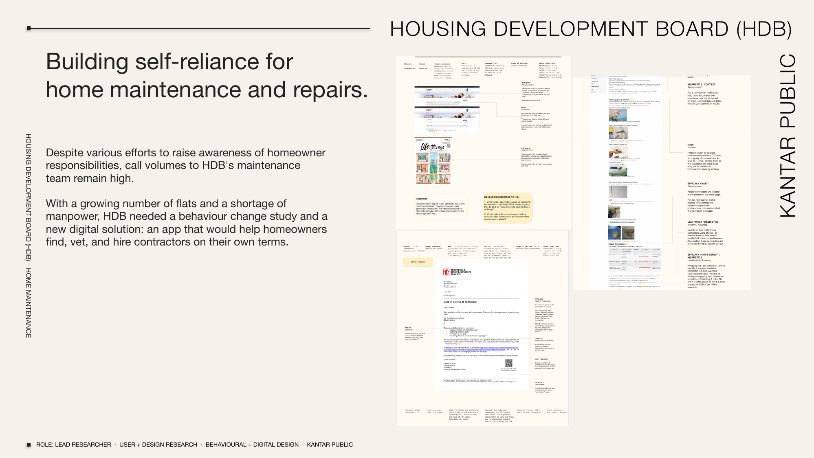

hdb handysearch
Building self-reliance for home maintenance and repairs. HDB needed to help homeowners find, vet, and hire contractors on their own terms — reducing call volume while improving trust. The result was a contractor marketplace with four core features: a diagnosis tool embedded with HDB's maintenance protocols, job request form and multi-quote comparison, contractor profiles with ratings and cost estimates, and direct chat, appointment booking, and payment. Wireframe iterations tested across three phases.